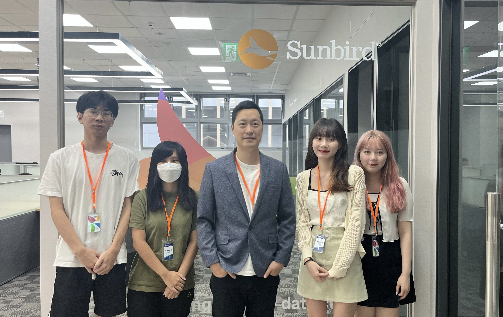

My Journey
Internship at @Dell Technologies
Jun 2025 – Aug 2025
Developed an automated LCD defect detection system on Raspberry Pi using 3D CNN, integrating hardware, API, and model optimization to improve inspection efficiency and accuracy.


Internship at @Sunbird Software
Sep 2022 – Aug 2023
Enhanced backend reliability by expanding automated testing and implementing CI/CD pipelines with GitHub Actions and Kubernetes.
Internship at @Bank Sinopac
Feb 2022 – Jul 2022
Developed real-time customer segmentation pipelines using ML models and automated ETL with Apache Airflow, improving recommendation accuracy and enabling data-driven insights.